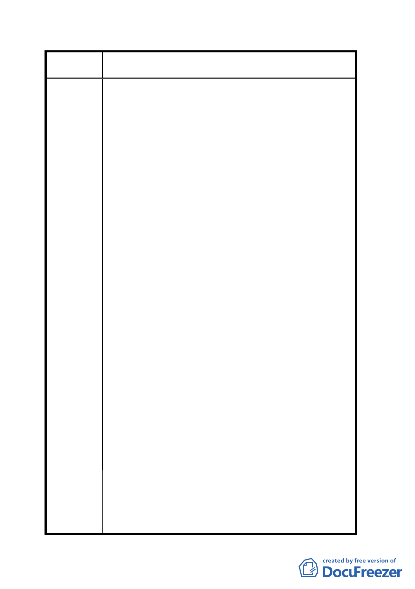

案
名
變更臺北市文山區萬隆段二小段瀝青拌合場用地及住宅區
（專案國宅用地）為學校用地計畫案
叉口西南側，面積達 0.47 公頃的瀝青拌合場用地與專
案國宅用地上來興建中途學校，土地共計有十四筆，
除兩筆為私人所有外，其餘分屬國有財產局、內政部
營建署、內政部建築研究所、市府財政局、工務局養
工處所管有。
三、因為社會快速變遷及家庭結構改變，導致部分學生出
現行為偏差現象，中途學校的設置確有其必要，透過
專業社工及教職人員的輔導可以讓這些誤入歧途或是
遭受侵害的學童重新適應並回到正常的教育體系。然
而，主管機關所考慮選擇設立的地點卻大有問題，第
一是本地點旁邊緊鄰著人數眾多的國宅及即將改建的
大型眷村社區，更在溪口國小及志清國小附近，況且
基地旁邊即為環河高架快速道路，往來車輛的噪音對
教學品質影響極為巨大。第二，根據都發局的「都市
設計管制準則」規定，圍牆應以「灌木綠籬」為原則，
若因安全因素考量，得設置高度二公尺以下圍牆，但
基座不得高於 45 公分，欄杆且應為綠籬景觀處理。本
案所設置為中途學校，以綠籬做為校區與社區的間
隔，適當嗎？對社區居民的保護夠嗎？更遑論還有兩
所小學在旁邊。
四、以上兩點來看「中途學校」計劃設在這裡根本是個錯
誤，唯一可以解釋的是 0.47 公頃的基地面積，私人土
地僅佔 32 平方公尺，其餘都是國有土地，教育局可以
不用再花大筆經費進行徵收。所以不管設置地點是否
合適、對將來教學品質良好與否、社區居民意見等，
完全不再教育局考慮範圍之內！而發展局所作的「變
更計畫內容」中所持的理由更為可笑：「本基地區位獨
立、面積適中、四鄰環境單純，極適合設置獨立且環
境干擾少之獨立式中途學校」。市府各單位根本僅是為
節省土地徵收費用，所以編出一堆荒唐至極的理由，
就是硬要將各方面條件都不適合的學校蓋在這裡。
要求教育局以說明會及公正單位民意調查的方式重新評估
建 議 辦 法 設置地點，另請都委會及發展局停止本案之土地變更計
畫，以免造成市府錯誤決策！
擬建議處理
意見
同意撤回計畫案。
四